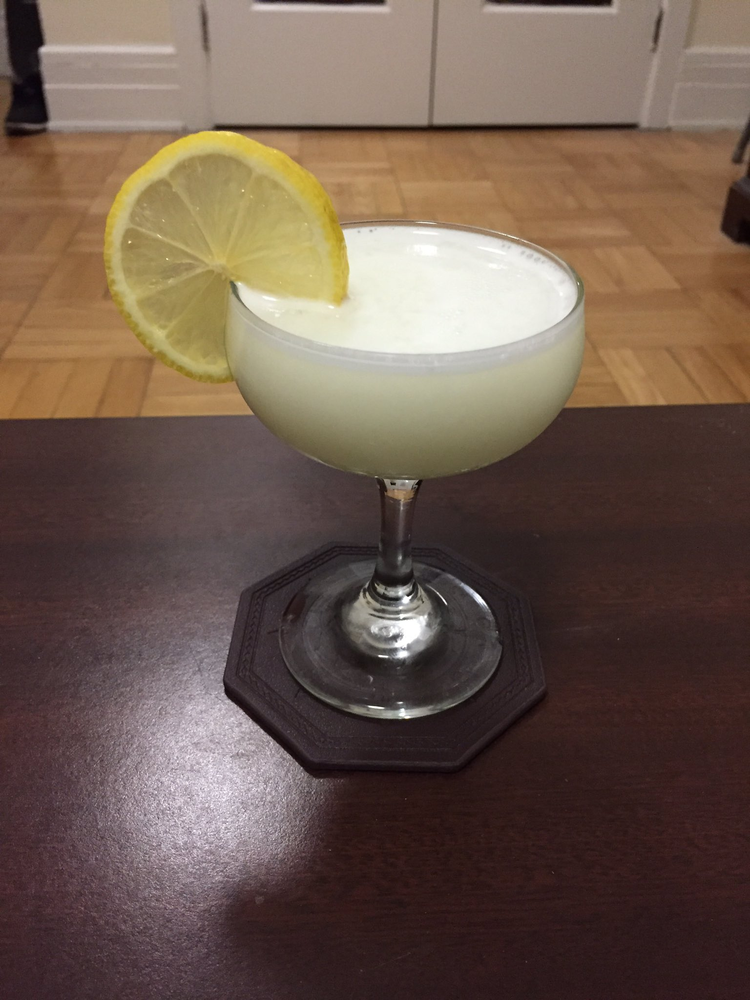
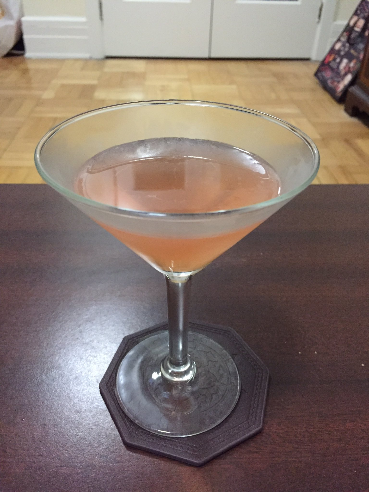
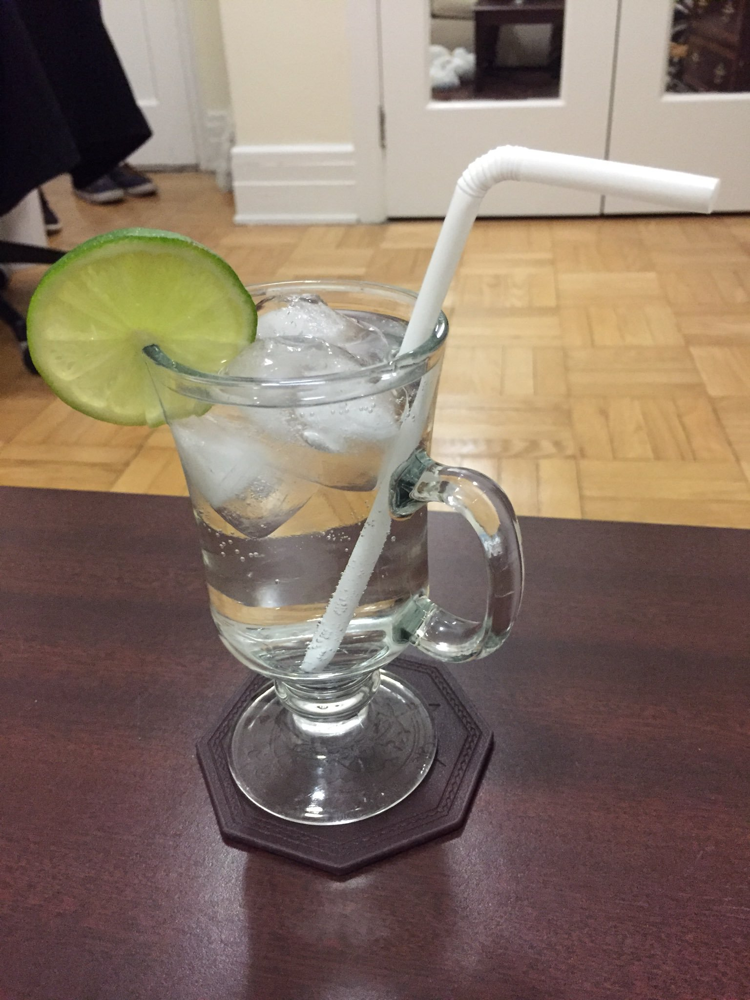
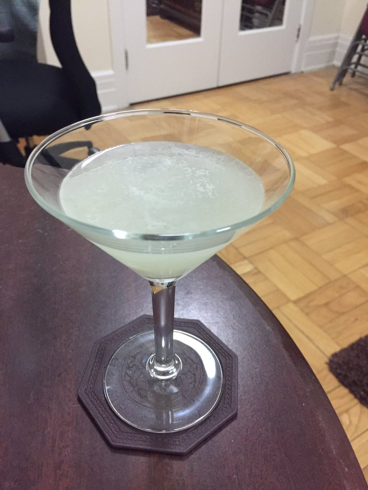
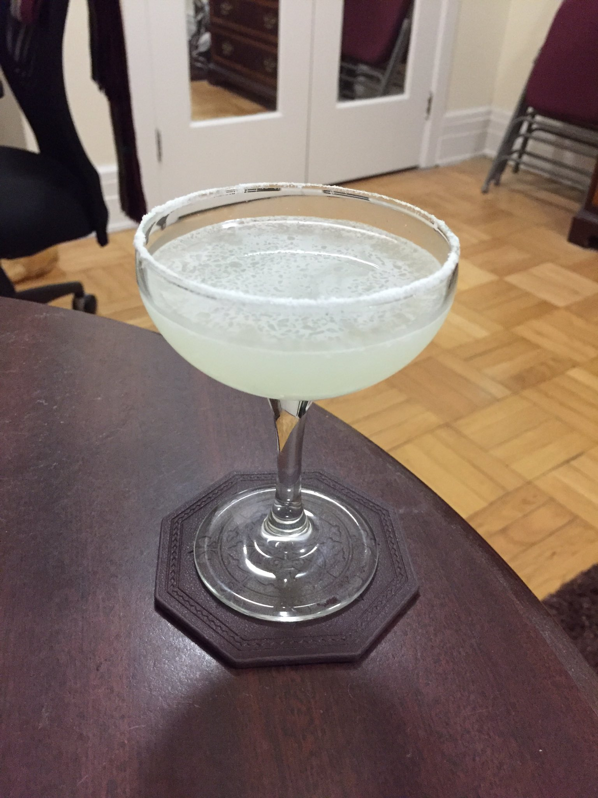
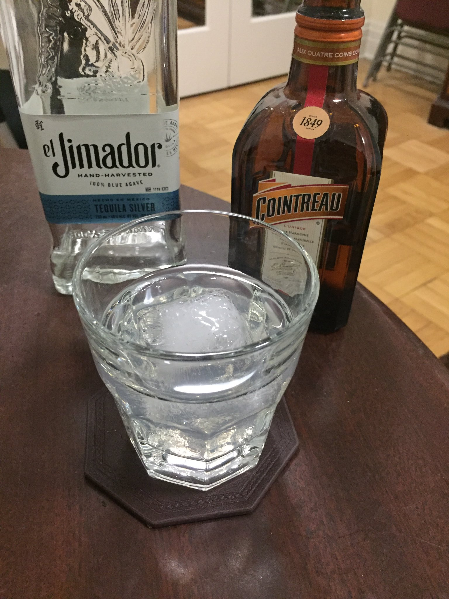
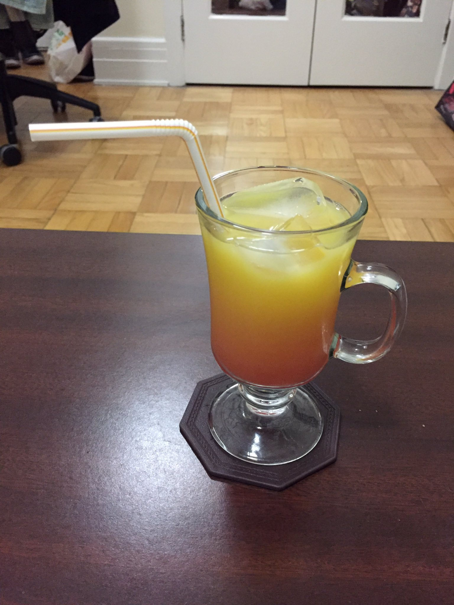
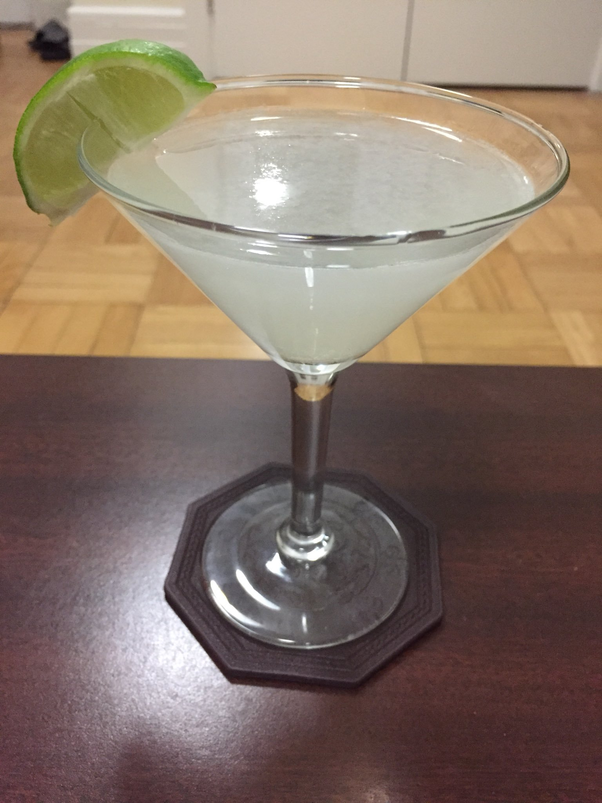

More foamy and fluffy because of Egg White.

Gin-Based
1.1 White Lady (European)
1.2 A1
1.3 Gin Tonic [Aperitif]
1.4 Gimlet [Aperitif+]
Tequila-Based
2.1 Margarita [Aperitif]
2.2 French Cactus
2.3 Tequila Sunrise
Rum-Based
3.1 Daiquiri
3.2 XYZ

3.3 Mojito [Aperitif]